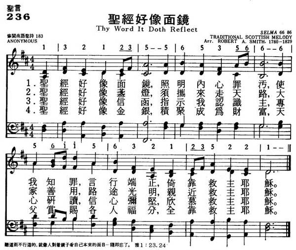
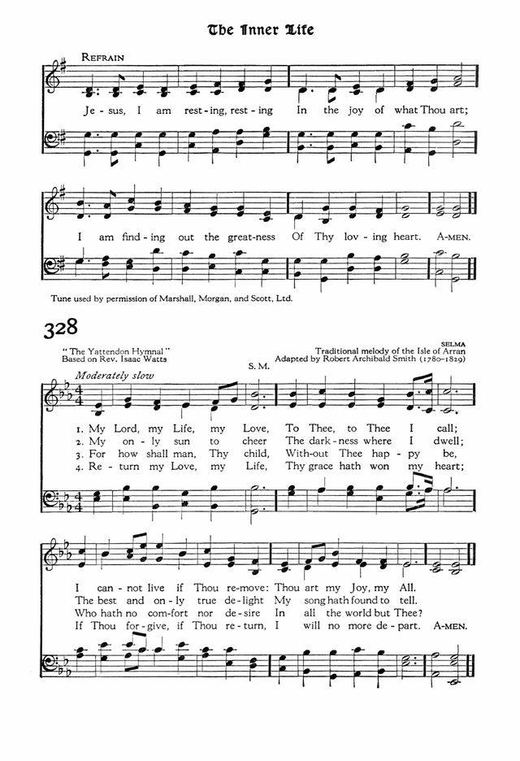

|
|
236圣经好像面镜 |
|
NIL |
1.圣经好像面镜，照明内心罪污，
使我知罪，言行端正，依靠救主耶稣。 2.圣经好像盏灯，需提来走天路， 天家善用，路途光明，亲近救主耶稣。 3.圣经好像信函，指示我认识主， 专心研读，信心弥坚，欣慕救主耶稣。 4.圣经好像金银，积聚成为财富， 天父赏赐各人福分，全靠救主耶稣。 |
|
https://www.mred365.cn/szxg/7239.html  https://hymnary.org/hymn/HPAG1933/page/347 SELMA
 |
|
|
|
|

LX1855 Thy
Word It Doth Reflect 236圣经好像面镜
Tune Information
| Title: | SELMA |
| Adapter: | Robert Archibald Smith (1825) |
| Meter: | 6.6.8.6 |
| Incipit: | 13212 35565 35666 |
| Key: | E♭ Major |
| Source: | Traditional, from the Isle of Arran |
| Copyright: | Public Domain |
| Short Name: | Robert Archibald Smith |
| Full Name: | Smith, Robert Archibald, 1780-1829 |
| Birth Year: | 1780 |
| Death Year: | 1829 |
Although largely self-taught, Robert A. Smith (b. Reading, Berkshire, England, 1780; d. Edinburgh, Scotland, 1829) was an excellent musician. By the age of ten he played the violin, cello, and flute, and was a church chorister. From 1802 to 1817 he taught music in Paisley and was precentor at the Abbey; from 1823 until his death he was precentor and choirmaster in St. George's Church, Edinburgh. He enlarged the repertoire of tunes for psalm singing in Scotland, raised the precentor skills to a fine art, and greatly improved the singing of the church choirs he directed. Smith published his church music in Sacred Harmony (1820, 1825) and compiled a six-volume collection of Scottish songs, The Scottish Minstrel (1820-1824).
Bert Polman